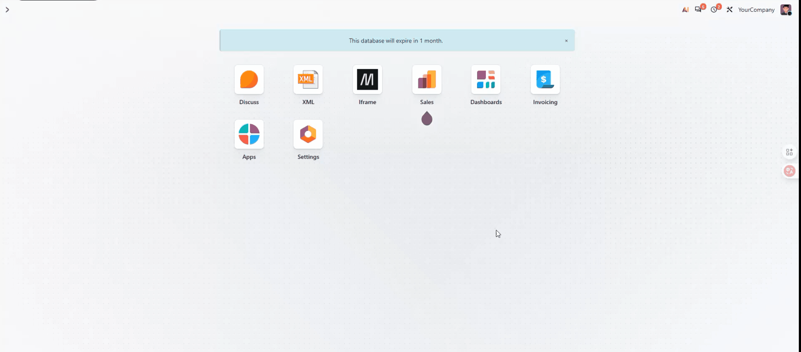

Embed web pages, mind maps and Excalidraw whiteboards in the Odoo backend, with data persisted in the Odoo database
This module provides powerful embedding and editing capabilities inside the Odoo backend, including custom webpage embedding, online mind map editing and Excalidraw whiteboard drawing. All edited data can be fully persisted in the Odoo database for permanent storage.
{
"name": "MindMap & Excalidraw",
"summary": "Embed web pages, mind maps and Excalidraw whiteboards in the Odoo backend, with data persisted in the Odoo database",
"description": """
Provides embedding capability within the Odoo backend. Administrators maintain a URL list for users to quickly switch pages via dropdown menu, with page refresh support.
Built-in mind map module: supports online mind map editing with persistent data storage.
Built-in Excalidraw whiteboard module: embeds Excalidraw canvas. Canvas changes are automatically saved with a delay to the Odoo database.
Mind maps and whiteboards can be opened in a dedicated editing view with one click through form buttons. Frontend and backend communicate via a bridge.
""",
"version": "1.0",
"author": "Your Name",
"depends": ["web"],
"installable": True,
"auto_install": False
}